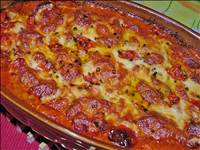
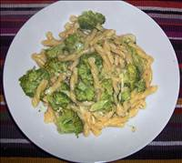

Rezepte
Bolognese Sauce
Zutaten:
1 kg Rinderhackfleisch
3 Knoblauchzehe(n), in Scheiben geschnittener
3 Möhre(n)
3 Stange/n Staudensellerie
2 große Zwiebel(n)
1 ½ Dose/n Tomate(n), à 400 g Inhalt
600 g Spaghetti
125 g Butter
500 ml Milch
3 Peperoncini, zerstampfte
Meersalz
Pfeffer, schwarzer
n. B. Hühnerbrühe, instant
wenig Olivenöl
1 Schuss WeißweinZubereitung:
Das wichtigste an einer Bolognese ist das sogenannte "Soffritto":
Dazu einen ordentlichen Klotz Butter (ca. 125 g) und ein wenig Olivenöl (damit die Butter nicht verbrennt) in eine Pfanne geben. Zwiebeln, Möhren und Staudensellerie putzen bzw. schälen, ganz fein hacken und auf möglichst niedriger Flamme langsam (mind. 30 Minuten) darin garen, bis das Gemüse schön glasig und weich geworden ist.
Wichtig ist, dass das Gemüse nicht brät, sondern wirklich nur gart - also nicht zu heiß werden lassen!
Derweil das Rinderhackfleisch so lange in einer weiteren Pfanne scharf anbraten, bis es anfängt zu karamellisieren. Anschließend mit einem Schuss Weißwein ablöschen, so dass sich alles Angebackene vom Boden lösen lässt. Wichtig: Jetzt je nach Saucenmenge ca.¼ bis ½ Liter Milch hinzugeben, die sich um das Hackfleisch legt und diesem einen ganz milden Geschmack verleiht.
Sobald das Fleisch mit Weißwein und Milch aufkocht, die Dosentomaten hinzugeben (die erforderlichen frischen Tomaten sind bei uns leider nicht erhältlich). Am besten geeignet sind hierfür die San Marzano Eiertomaten aus der Gegend von Neapel. Diese haben einen ganz eigenen süßlichen Geschmack, der der Sauce Bolognese und auch einer ordentlichen Sauce Napoli sehr zuträglich ist.
Sobald dies alles wieder aufgekocht ist, den "Soffritto" hinzugeben. Der in Scheiben geschnittene Knoblauch und die zerstampften Peperoncini können jetzt auch mit hinein. Das Ganze kann dann gar nicht lange genug köcheln. Ideal wären ca. 5 Stunden.
Dann abkühlen lassen und dann noch einmal 1 Stunde langsam aufwärmen (muss aber nicht, schmeckt auch so). Mindestens 2 Stunden sollte es aber köcheln.
Tipp: Man kann auch noch ein wenig frisch gehackte Möhre und Staudensellerie nachschieben, um ein wenig mehr Biss an das Gemüse zu kriegen. Mit Meersalz, frisch gemahlenem schwarzen Pfeffer und der Hühnerbrühe abschmecken.
In der Zwischenzeit die Nudeln nach Packungsanweisung bissfest kochen, anschließend abgießen.
Die Spaghetti auf Tellern anrichten und die Bolognese darüber verteilen. Heiß servieren.
Arbeitszeit: ca. 30 Min.
Koch-/Backzeit: ca. 5 Std.Bunter Gemüseauflauf
Zutaten:
2 Paprikaschote(n), rote
3 Zucchini, kleine
500 g Brokkoli
3 Karotte(n)
Butter, für die Form
125 ml Gemüsebrühe
250 g Crème fraîche
100 g Käse (Gouda), geriebenZubereitung:
Die Paprikaschoten in feine Streifen schneiden. Zucchini in dünne Scheiben schneiden. Broccoli waschen und in Röschen zupfen. Die Karotten schälen und fein raspeln.
Den Ofen auf 200°C vorheizen. Eine Auflaufform ausfetten.
Paprikastreifen, Zucchini und Broccoli hineinschichten und die Karottenraspel auf dem Gemüse verteilen. Die Gemüsebrühe mit der Crème fraîche verrühren und über den Auflauf gießen.
Den Auflauf im Ofen 20 min backen, dann erst den Käse darüber streuen und nochmals 20 min. überbacken.
Dazu gibt es knuspriges Vollkorn-Baguette.
Arbeitszeit: ca. 30 Min.Cheeseburger
Zutaten:
600 g Hackfleisch, (Rinderhack), feines
100 g Cheddarkäse
100 ml Milch
8 Scheibe/n Schmelzkäse
1 EL Mayonnaise
4 Brötchen, Burger-
n. B. Blattsalat
n. B. Chilisauce
Salz und Pfeffer
n. B. Gewürzgurke(n)
n. B. Zwiebel(n)
n. B. Tomate(n)Zubereitung:
Cheddar- und Schmelzkäse zerkleinern, mit Mayo, Chilisoße (nach Belieben oder 1 EL) und Milch in eine Schüssel geben (mikrowellengeeignet). Das Ganze in die Mikrowelle stellen. Immer kurz erhitzen und umrühren. Wenn die Sauce fertig ist, kurz in den Kühlschrank stellen. Die Salatblätter waschen und in kurze Streifen schneiden.
Das Rinderhack mit Salz und Pfeffer würzen und zu vier kleinen Patties formen. Diese entweder in der Pfanne braten, bis sie gar sind, oder auf dem Grill. Nach dem Wenden eine Scheibe Schmelzkäse darauflegen und schmelzen lassen.
Die Burgerbrötchen aufschneiden (wer grillt, kann die Brötchen kurz drauf legen), die untere Hälfte mit der Käsesoße bestreichen und den Salat darauf verteilen. Das Fleisch draufgeben. Nach Belieben mit Zwiebelscheiben, Tomate oder Gurken belegen.
Schmeckt auch kalt.
Arbeitszeit: ca. 25 MinChili con Carne
Zutaten:
800 g Hackfleisch vom Rind
2 Chilischote(n), rote
2 große Zwiebel(n)
1 Zehe/n Knoblauch
1 TL, gehäuft Kreuzkümmelpulver
2 TL Chilipulver
3 gr. Dose/n Tomate(n)
2 kl. Dose/n Kidneybohnen
1 Zimtstange(n)
Salz und PfefferZubereitung:
Die Zwiebeln und den Knoblauch würfeln und in heißem Öl 5 Minuten anschwitzen, bis sie weich sind. Gehackte Chilischoten mit Kernen, Kreuzkümmel und Chilipulver hinzufügen und weitere 2 Minuten dünsten. Das Rinderhack in den Topf geben und bei großer Hitze ringsherum krümelig anbraten. Die Dosentomaten und die Zimtstange unterrühren und mit Salz und Pfeffer kräftig würzen.
Alles auf mittlerer Flamme 90 Minuten köcheln lassen, dabei gelegentlich umrühren. 30 Minuten vor Ende der Garzeit die Bohnen hinzufügen und eventuell mit Sambal Oelek abschmecken (wem es noch nicht scharf genug sein sollte).
Mit Weißbrot und einem Klecks Naturjoghurt oder Guacamole servieren.
Noch besser schmeckt es, wenn man das Chili con Carne schon am Vortag zubereitet.
Arbeitszeit: ca. 20 Min.
Koch-/Backzeit: ca. 1 Std. 40 Min.Cordon bleu

Zutaten:
2 Kalbsschnitzel, ca. 1,5 cm dick
2 Scheibe/n Käse, Emmentaler (oder Greyerzer)
2 Scheibe/n Schinken, (magerer Koch- oder Rohschinken)
1 Ei(er)
Mehl
Semmelbrösel
Salz
Pfeffer
ButterschmalzZubereitung:
Auf einen Teller etwas Mehl geben, in einem tiefen Teller das Ei verquirlen und auf einen weiteren Teller die Semmelbrösel schütten.
Die Kalbschnitzel der Länge nach aufschneiden, aber nicht ganz durchtrennen (Schmetterlingsschnitt). Die Schnitzel zwischen Frischhaltefolie legen und mit einem schweren, FLACHEN Gegenstand, z. B. einem Topf, kräftig klopfen. Die Frischhaltefolie entfernen und je eine Scheibe Käse und Schinken hinein legen, wieder zuklappen und mit Zahnstochern feststecken. Salzen, pfeffern, gleichmäßig in Mehl wenden, durch das Ei ziehen und anschließend mit den Semmelbröseln panieren.
Reichlich Butterschmalz in einer unbeschichteten Pfanne stark erhitzen bis es raucht, die Temperatur etwas herunterschalten und die Schnitzel von jeder Seite ca. 3 - 5 Minuten schnell braten, bis sie schön goldbraun sind.
Als ich mich in der Datenbank nach "Cordon bleu" umgesehen habe, habe ich viele tolle Varianten entdeckt, aber das schlichte Original aus Kalbschnitzel ohne irgendwelchen Schnick-Schnack habe ich nicht gefunden. Das Cordon bleu - das "blaue Band" ziert im 17. Jahrhundert die fortgeschrittenen Schülerinnen im Institut de Saint-Louis, einem Lehrinstitut für Töchter des verarmten Adels. Danach wurde es zum Symbol für feinste Kochkunst. Im Original wird es daher IMMER aus Kalbschnitzel gefertigt, alles andere ist - ähnlich wie beim Wiener Schnitzel - nur nach "Cordon bleu Art". Als Käse sollte ein echter Schweizer Emmentaler verwendet werden, also entweder "Emmentaler AOC" bzw. "Emmentaler Switzerland". Dieser Käse ist mindestens 4 Monate gereift und aus würzigerer Rohmilch hergestellt. Er schmeckt wesentlich kräftiger und schärfer als Imitate, z. B. aus Deutschland. Ähnlich im Geschmack ist allenfalls Greyerzer (Gruyère - ebenfalls min. 5 Monate gereift). Der Schinken ist Geschmackssache, jedoch wird meistens magerer Kochschinken verwendet. Auch Kochschinken aus Geflügel ist möglich.
Arbeitszeit: ca. 20 MinEierspeise spezial
Zutaten:
5 Ei(er)
200 g Schinken
1 Handvoll Käse, geriebener
2 EL Öl
Salz und Pfeffer
Paprikapulver
Petersilie oder Schnittlauch, TK
Schuss Milch oder CremefineZubereitung:
Die Eier in eine Schüssel schlagen, verquirlen, mit Salz und Pfeffer würzen und anschließend den geriebenen Käse und die Milch unterrühren.
Den Schinken in Streifen oder kleine Quadrate schneiden und in etwas Öl in einer Pfanne anbraten. Das restliche Öl dazugeben und die Eier in die Pfanne geben. Unter ständigem leichten Rühren und Herumschieben mit der Fläche einer Gabel dafür sorgen, dass die Flüssigkeit immer wieder mit dem Boden der Pfanne in Kontakt kommt, damit die Masse gleichmäßig stockt.
Abschließend von der Herdplatte nehmen und mit Petersilie oder Schnittlauch und Paprikapulver bestreut servieren.
Dazu am besten dunkles Brot reichen.
Arbeitszeit: ca. 10 Min.Filetsteak mit Cognac-Pfeffer-Soße

Zutaten:
500 g Bohnen, TK
Salz
Pfeffer, schwarz
4 Rinderfilet(s), Steaks à 150 g
200 ml Rinderfond, aus dem Glas
8 Scheibe/n Bacon, dünn geschnitten
1 EL Pfeffer, grün, eingelegt
CognacZubereitung:
Bohnen garen. Steaks im Öl braten. Mit Salz und Pfeffer würzen. Warm stellen. Bratensatz mit Fond und Cognac lösen. Bei starker Hitze etwas einkochen. Bohnen mit Speck umwickeln. In 1 TL Öl ca. 13 Min. braten. Soße etwas binden, grünen Pfeffer einrühren. Alles anrichten.
Arbeitszeit: ca. 30 Min.Gebackene Toast-Muffins mit Ei und Speck
Zutaten:
3 TL Thymian, Blättchen, oder 3 Zweige Thymian
4 EL Olivenöl
4 Scheibe/n Toastbrot
2 EL Senf, mittelscharf
4 Scheibe/n Frühstücksspeck, oder Bacon
4 m.-große Ei(er)Zubereitung:
Den Backofen auf 160°C Ober-Unterhitze vorheizen. Bei Verwendung von Thymianzweigen diese waschen, gut trocken schütteln und die Blättchen abzupfen.
Vier Mulden eines Muffinblechs mit dem Öl auspinseln. Toastbrotscheiben mit einem Nudelholz dünn ausrollen. Jede Scheibe vorsichtig in die Mulden drücken, mit etwas Senf bestreichen, mit je einer Scheibe Speck auslegen und mit Thymian bestreuen. In jeden Toast-Muffin ein Ei aufschlagen. Die Muffins im Ofen 25-30 Min. backen, bis das Ei gestockt ist.
Muffins vorsichtig aus der Mulde heben und servieren.
Arbeitszeit: ca. 10 Min.
Koch-/Backzeit: ca. 30 Min.Gebratenes Lachsfilet auf Zucchininudeln

Zutaten:
4 Zucchini
300 g Lachsfilet(s) ohne Haut
Salz und Pfeffer
1 Stängel Thymian oder sonstige Kräuter, je nach Geschmack
1 EL Frischkäse, magerer, 0,1 %Zubereitung:
Die Zucchini entkernen und entweder mit oder ohne Schale der Länge nach in dünne, spaghettiähnliche Streifen hobeln.
Den Lachs spülen, trockentupfen, mit Salz und Pfeffer einreiben und anbraten. Ca. 4 - 5 Minuten auf jeder Seite, wobei aufgrund des Fehlens von Fett die Gefahr des Anbrennens besteht. Eventuell 1 Löffel Wasser und das Verwenden eines Deckels hilft, dies zu vermeiden. Nach dem Umdrehen die Kräuter auf den Fisch geben, wieder 4 Minuten braten. Zum Schluss vorsichtig ohne Flüssigkeit braten, damit er Farbe annimmt. Der Fisch sollte noch etwas nachgeben, wenn man ihn mit der Gabel drückt, dann ist er innen noch saftig. Den Fisch aus der Pfanne nehmen auf einem warmen Teller mit Alufolie abdecken und ziehen lassen, bis die Zucchininudeln fertig sind.
Die Bratenreste mit 1 bis 2 EL Wasser aufkochen. Die Flüssigkeit gut würzen, die Zucchininudeln dazugeben und 4 Minuten dünsten lassen. Wem das zu fischig oder zu dunkel ist, kann das natürlich auch mit frischem Wasser machen. Mit etwas magerem Frischkäse binden und abschmecken.
Reichlich Zucchininudeln auf den Tellern anrichten und den Lachs darauf geben.
Arbeitszeit: ca. 15 Min.
Koch-/Backzeit: ca. 15 Min.
Ruhezeit: ca. 5 Min.Gefüllte Paprikaschoten
Zutaten:
125 g Reis (Langkornreis)
4 EL Oliven, mit Paprika gefüllte (Glas)
1 m.-große Tomate(n)
1 m.-große Zwiebel(n)
1 Zehe/n Knoblauch
4 m.-große Paprikaschote(n)
2 EL Öl
400 g Hackfleisch, gemischtes
2 EL Tomatenmark
200 g Feta-Käse
1 TL Gemüsebrühe
1 TL Ajvar
Salz und PfefferZubereitung:
Den Reis nach Packungsanweisung garen.
Die Oliven in Scheiben schneiden. Die Tomate waschen und klein schneiden. Die Zwiebel und den Knoblauch schälen und würfeln.
Nun die Paprikaschoten waschen und jeweils einen Deckel abschneiden. Nun die Schoten entkernen und die Stiele aus den Deckeln schneiden. Dann die Deckel in kleine Würfel schneiden.
Das Öl in einer großen Pfanne erhitzen. Zwiebel, Knoblauch und Hackfleisch darin anbraten. Die Paprikawürfel dazugeben und ca. 1-2 Min. mitbraten. Nun Tomatenmark und die Tomatenstückchen unterrühren und kurz mitbraten. Vom Herd nehmen.
Den Feta-Käse würfeln. Den Reis abgießen und gut abtropfen lassen. Reis, Feta-Käse und Oliven zum Hackfleisch geben und nach Bedarf würzen. Die Masse nun in die vorbereiteten Schoten füllen.
Die gefüllten Paprikaschoten in eine Auflaufform stellen. 200 ml Wasser mit der Gemüsebrühe und dem Ajvar verrühren und angießen.
Im vorgeheizten Backofen bei 180°C bis 200°C ca. 30 Min. garen.
Arbeitszeit: ca. 35 Min.Germknödel mit Powidl
Zutaten:
30 g Hefe (Germ)
500 g Mehl
Salz
70 g Zucker
70 g Butter
¼ Liter Milch, lauwarm
1 Ei(er), davon das Eigelb
1 Ei(er)
Zitrone(n) - Schale gerieben
1 Pck. Vanillezucker
300 g Pflaumenmus (Powidl)
1 EL Rum
150 g Mohn, gemahlen
Puderzucker, zum Bestreuen
100 g ButterZubereitung:
Ein Dampfl (Hefestück) aus etwas Mehl mit Zucker und Hefe, in lauwarme Milch rühren, machen und zum Aufgehen zur Seite stellen.
Hefeteig zubereiten: Alle Zutaten mit dem Dampfl vermischen und gut verkneten. Zu einer Kugel formen, etwas Mehl darüber streuen und mit einem Tuch bedeckt gehen lassen (oder im Weidling, bedeckt gehen lassen).
Powidl (Pflaumenmus) mit Rum vermengen. Mit einem Löffel Nocken ausstechen, mit der Hand flachdrücken, einen Kaffeelöffel Powidl in die Mitte setzen, die Ränder hochziehen, zu einem Knödel formen, nochmals auf einem bemehlten Brett aufgehen lassen. In Dampf (auf einem befetteten Sieb), oder Dampfgarer, etwa 12 Minuten garen. Mit heißer Butter übergießen, mit Mohn und Zucker bestreuen, sofort servieren.(Sonst fallen sie zusammen und werden speckig ;-))
Tipp: Man kann die Knödel auch im Wasser kochen, sie gehen nur nicht so schön auf wie über Dampf gegarte.
Unbedingt abdecken! Langsam köcheln lassen.
Weidling: große Plastikschüssel mit Griffe
Arbeitszeit: ca. 30 Min.
Ruhezeit: ca. 1 Std.Geschnetzeltes mit Paprika
Zutaten:
½ kg Schweineschnitzel
2 EL Mehl
Salz und Pfeffer, (gemahlen)
2 Zwiebel(n)
1 Paprikaschote(n), grüne
1 Paprikaschote(n), rote
2 EL Öl
1 EL Paprikapulver, (Edelsüß)
125 ml süße Sahne
125 ml Brühe
2 EL TomatenmarkZubereitung:
Das Fleisch waschen, trocken tupfen und in dünne Streifen schneiden (ca. ½ cm dick). Mehl mit etwas Salz und Pfeffer vermischen und das Fleisch darin wenden. Zwiebel schälen und in Ringe schneiden.
Die beiden Paprikaschoten entstielen, entkernen, waschen und in Streifen schneiden. Das geschnittene Schweinefleisch bei mittlerer Hitze in heißem Öl kräftig von allen Seiten anbraten. Zwiebelringe und Paprikastreifen zufügen und andünsten.
Paprikapulver darüber streuen und kurz verrühren. Die Sahne und die Suppenbrühe zufügen, verrühren und zugedeckt bei schwacher Hitze köcheln (ca. 20 Minuten).
Das Tomatenmark einrühren und mit Salz und Pfeffer abschmecken.
Das Geschnetzelte mit Reis, Nudeln oder Röstis servieren.
Arbeitszeit: ca. 15 MinGlasierte Ente
Zutaten:
2 Stück(e) Entenbrust
1 ½ EL Honig
1 Spritzer Sauce (chines. Chilli-Knoblauch-Soße)
2 EL Sojasauce, helle
1 Prise(n) Cayennepfeffer
1 TL Marmelade (Orangenmarmelade)Zubereitung:
Zuerst die Marinade für die Glasur herstellen:
In einem breiten Topf bei sehr schwacher Hitze den Honig flüssig werden lassen, die Knoblauch-Chili-Soße, die Sojasoße, die Orangenmarmelade mit dem Cayenne-Pfeffer dazu geben und bei leichter Hitze so lange rühren, bis eine dickflüssige Soße entsteht (Schmeckprobe: die Marinade soll süß-scharf sein, etwas nach Honig schmecken - den Orangensaft darf man nur ganz leicht rausschmecken).
In einer Pfanne die Entenbrust von allen Seiten je 3-4 Minuten kräftig anbraten. Das Fleisch anschließend in der Marinade wenden, dann in einen Bräter legen und mit dem Rest der Marinade bepinseln. In dem vorgeheizten Backofen bei ca. 180-200 Grad noch für 15 Minuten fertig garen, bis die Ente oben eine schöne, dunkle Farbe bekommt und das Fleisch knusprig geworden ist. Dazu passt sehr gut Apfel-Rotkraut und (Brat)Kartoffeln. Statt Ente kann man auch Hähnchenbrust oder -schenkel nehmen, oder Spearribbs, oder... oder...
Arbeitszeit: ca. 20 Min.Grießbrei

Zutaten:
800 ml Milch
80 g Weichweizengrieß
2 EL Zucker
1 Pck. Vanillezucker
1 Prise(n) Salz
1 Ei(er)
25 g ButterZubereitung:
Die Milch mit Zucker, Vanillezucker und einer Prise Salz in einem weiten Topf zum Kochen bringen. Den Weizengrieß unter Rühren mit einem Schneebesen einrieseln lassen und nochmals aufkochen lassen. Dann den Topf vom Herd nehmen und den Grieß zugedeckt 5 Minuten ziehen lassen.
In der Zwischenzeit das Eigelb vom Eiweiß trennen. Das Eiweiß zu steifem Schnee schlagen. Das Eigelb in den Grießbrei rühren. Die Butter ebenfalls in den Grießbrei geben und so lange rühren, bis die Butter geschmolzen ist. Zum Schluss den Eischnee vorsichtig unter den fertigen Grießbrei heben.
Dazu schmeckt Kompott nach Wahl, Zimt und Zucker oder braune Butter.
Arbeitszeit: ca. 15 Min.
Koch-/Backzeit: ca. 10 Min.Hackbällchen in Tomatensoße

Zutaten:
500 g Hackfleisch, halb und halb
750 g Tomate(n) Stücke, frisch oder Tetrapack
1 Paprikaschote(n), rot
3 Knoblauchzehe(n)
2 Brötchen, altbacken
3 m.-große Zwiebel(n)
3 Ei(er)
1 TL Senf
Salz und Pfeffer
2 TL Speisestärke
1 EL Kräuter, italienisch, getrocknet
400 g Sahne
3 Kugel/n Mozzarella
2 EL MargarineZubereitung:
Die Brötchen in Wasser einweichen. Den Backofen auf 200 Grad vorheizen. Das Gehackte in eine große Schüssel geben, die Brötchen ausdrücken zufügen. 2 Zwiebeln klein schneiden und ebenso wie Senf, Eier, Salz, Pfeffer und 1 Knoblauchzehe dazugeben. Alles kräftig durchmischen.
Eine Auflaufform mit 1 EL Margarine fetten. Aus dem Hackfleisch golfballgroße Kugeln formen und hineinsetzen.
Die Paprikaschote waschen, putzen und in kleine Streifen schneiden, die Zwiebel und den Knoblauch klein schneiden und in einer Pfanne anbraten. Paprika zugeben und 10 Minuten etwas bräunen.
Die Tomatenstückchen, Salz, Pfeffer, die italienischen Kräuter und die Sahne, in der 2 TL Speisestärke aufgelöst sind, einrühren, gut mischen und abschmecken. Alles über die Hackbällchen geben. Den Mozzarella in Scheiben darauflegen.
Auf mittlerer Schiene 30-40 Minuten backen. Dazu schmecken Nudeln, Reis oder Baguette und Gurkensalat.
Arbeitszeit: ca. 35 Min.Hackbraten
Zutaten:
2 Brötchen, altbackene
3 m.-große Zwiebel(n)
750 g Hackfleisch, gemischtes
2 Ei(er)
1 TL Senf
1 EL Petersilie, gehackte
Salz
Pfeffer
100 g Speck, durchwachsener
1 m.-große Tomate(n)
etwas Saucenbinder
etwas Wasser, heißesZubereitung:
Die Brötchen in kaltem Wasser einweichen. Die Zwiebeln abziehen, 1 Zwiebel in Viertel schneiden und für die Sauce zurücklassen, die restlichen Zwiebeln fein würfeln.
Gehacktes mit den gut ausgedrückten Brötchen, Zwiebelwürfeln, Eiern, Senf und Petersilie vermengen, salzen und pfeffern. Aus der Masse mit nassen Händen einen länglichen Kloß formen und in eine mit Wasser ausgespülte Fettfangschale oder eine flache Auflaufform legen. Den Speck in feine Streifen schneiden, den Kloß damit belegen und den Speck gut andrücken. Die Fettfangschale oder Auflaufform in den Backofen schieben.
Ober/Unterhitze: etwa 200°C vorgeheizt
Heißluft: etwa 180°C nicht vorgeheizt
Garzeit: etwa 60 Minuten
Sobald der Bratensatz anfängt zu bräunen, etwas heißes Wasser hinzu gießen. Das Fleisch ab und zu mit dem Bratensatz begießen und verdampfte Flüssigkeit nach und nach durch heißes Wasser ersetzen.
Inzwischen die Tomate waschen, abtrocknen und den Stielansatz herausschneiden. Die Tomate vierteln, zusammen mit den beiseite gelegten Zwiebelvierteln ca. 30 Minuten vor Beendigung der Garzeit zu dem Fleisch geben und mit braten.
Den fertig gegarten Braten in Scheiben schneiden, auf einer Platte anrichten und warm stellen. Den Bratensatz mit etwas Wasser loskochen, durch ein Sieb in einen Topf gießen und mit Saucenbinder binden. Salzen und pfeffern. Heiß mit den Tomaten und Zwiebeln servieren.
Arbeitszeit: ca. 20 Min.
Koch-/Backzeit: ca. 1 Std.Indisches Butter Chicken aus dem Ofen

Zutaten:
1 TL Paprikapulver
1 EL Limonensaft oder Zitronensaft
2 TL Salz
1 Becher Joghurt (150 g)
2 Stück(e) Ingwer, jeweils daumengroß
2 Zehe/n Knoblauch
3 TL Cayennepfeffer
1 EL Garam masala
500 g Hähnchenbrust
500 g Tomate(n), passiert
4 EL Butter
1 TL Zimt
1 EL Honig
150 ml Sahne
1 Zwiebel(n)Zubereitung:
Die Hähnchenbrust in Stücke schneiden. Aus 1 TL Paprikapulver, 1 EL Limonen- bzw. Zitronensaft, 1 TL Salz, 1 Becher Joghurt, 1 TL Cayennepfeffer, 1 EL Garam Masala Pulver, 1 Stück Ingwer und 1 Knoblauchzehe eine Marinade herstellen. Das Fleisch mit der Marinade mischen.
Mindestens eine Stunde einziehen lassen. Besser ist es, das Fleisch bereits am Vortag zu marinieren und über Nacht in den Kühlschrank zu stellen.
Den Ofen auf 200 °C vorheizen dann das Fleisch in einer Auflaufform für 25 Minuten garen.
Die Zwiebel klein hacken und in 2 EL Butter glasig anschwitzen. Die passierten Tomaten, den Zimt, 1 TL Salz, 2 TL Cayennepfeffer, 1 Stück Ingwer und 1 Knoblauchzehe hinzugeben. Alles 20 Minuten mit Deckel und bei niedriger Temperatur köcheln lassen. Gelegentlich umrühren. Nun die restlichen 2 EL Butter, den Honig und die Sahne hinzufügen, weitere 3 Minuten köcheln. Das Fleisch aus der Marinade nehmen, in die Soße geben, kurz umrühren und 2 Minuten mitköcheln lassen.
Dazu passt Reis oder Naan.
Wer gerne Koriandergrün mag, der kann ganz am Ende noch ein paar frisch gehackte Blätter hinzufügen.
Arbeitszeit: ca. 30 Min.
Koch-/Backzeit: ca. 30 Min.
Ruhezeit: ca. 1 Std.Lachs-Quiche
Zutaten:
200 g Weizenmehl
100 g Butter
1 Ei(er)
2 EL Milch
1 Prise(n) Salz
300 g Lachs, geräucherter, in dünnen Scheiben
750 g Porree
2 EL Butter
4 Ei(er)
6 EL Crème fraîche
½ TL Salz und Pfeffer, weißer
1 Prise(n) Muskat
1 TL Zitronensaft
Butter, für die FormZubereitung:
Aus Mehl, Butter, dem Ei, der Milch und dem Salz einen geschmeidigen Teig kneten. Den Teig in Alufolie ca. 30 min im Kühlschrank ruhen lassen.
Den Lauch putzen und in breite Ringe schneiden, dann ca. 6 Minuten in der erhitzten Butter dünsten, abkühlen lassen. Den Lachs in feine Streifen schneiden. Die Eier mit der Crème fraîche verquirlen, Lauch und Lachs untermengen, mit Salz, Pfeffer, Muskat und Zitronensaft würzen.
Die Form mit dem Teig auskleiden und die Gemüsemischung einfüllen. Den Backofen auf 200° vorheizen und die Quiche 30 - 35 Minuten backen.
Arbeitszeit: ca. 30 Min.
Koch-/Backzeit: ca. 35 Min.Lasagne al forno

Zutaten:
1 Schuss Olivenöl
2 m.-große Zwiebel(n)
2 m.-große Karotte(n)
200 g Sellerie
1 Zehe/n Knoblauch
1 EL Tomatenmark
500 g Hackfleisch, gemischtes
½ Tasse Rotwein
½ Liter Fleischbrühe
1 Dose Tomate(n), gehackte
etwas Salz
etwas Pfeffer
1 TL, gehäuft Oregano
etwas Cayennepfeffer
etwas Zimt
1 EL Zucker, braun
2 Zweig/e Rosmarin
1 TL, gehäuft Kakaopulver
30 g Butter
25 g Mehl
300 ml Milch
½ TL Muskat, gerieben
12 Lasagneplatte(n)
etwas Parmesan, oder MozzarellaZubereitung:
Vorbereitung:
Zwiebeln, Karotten und Sellerie schälen, in kleine Würfel schneiden und in eine Schüssel geben. Den Knoblauch ebenfalls schälen und fein hacken.
Zubereitung:
In einem breiten Topf das Olivenöl erhitzen. Darin Zwiebeln, Karotten und Sellerie leicht andünsten. Zuletzt den Knoblauch und das Tomatenmark hinzugeben und alles leicht anbraten. Den kompletten Inhalt des Topfes zurück in die Schüssel geben.
Erneut etwas Olivenöl im Topf heiß werden lassen, das Hackfleisch darin verteilen und scharf anbraten. Anschließend umrühren und auch von der anderen Seite anbraten. Inzwischen einen halben Liter Wasser im Wasserkocher erhitzen. Einen Brühwürfel in einem zweiten, kleineren Topf zerbröseln und mit dem heißen Wasser aufgießen und verrühren.
Wenn das Hackfleisch braun angebraten ist, das Gemüse zurück in den Topf geben. Rotwein, Brühe und Tomaten zufügen. Mit Pfeffer, Oregano, Cayennepfeffer, Zimt und braunem Zucker würzen. Die Rosmarinzweige in die Soße geben und alles vorsichtig verrühren. Zugedeckt mindestens 20-30 Minuten köcheln lassen und gelegentlich umrühren. Zum Schluss den Kakao zufügen und mit Salz oder Brühepulver abschmecken. Die Rosmarinstängel aus der Soße nehmen. Umrühren und die Ofenplatte ausschalten.
Für die Béchamelsauce die Butter in einem kleinen Topf zerlassen. Salzen, pfeffern und frisch geriebene Muskatnuss dazugeben. Mit dem Mehl bestäuben und mit einem Schneebesen verrühren. Die Milch langsam unter Rühren zugießen und kurz aufkochen. Wenn die Soße zu dick wird, mehr Milch hinzufügen.
Den Ofen auf 200 °C Umluft aufheizen.
In eine ofenfeste, breite Auflaufform etwas von der Hackfleischsoße geben und verteilen, sodass der Boden bedeckt ist. Mit Lasagneplatten abdecken und abwechselnd schichten. Auf jede Lage etwas Béchamelsauce gießen, den Großteil oben auf die letzte Schicht Lasagneplatte mit Hackfleischsoße geben. Mit Parmesan oder Mozzarellawürfeln bestreuen und mit etwas Pfeffer aus der Mühle abschließen.
Die Lasagne 30-40 Minuten im Ofen backen. Je nach Belieben die letzten 5 Minuten den Grill anschalten, dann wird sie oben brauner und knusprig.
Frisch und heiß servieren!
Arbeitszeit: ca. 25 Min.
Koch-/Backzeit: ca. 1 Std. 30 Min.Marillenknödel mit Kartoffelteig
Zutaten:
1 kg Kartoffel(n), mehlig
80 g Butter, weiche
50 g Grieß, (Weizengrieß)
1 Ei(er)
etwas Salz
250 g Mehl
1 ½ kg Aprikose(n), (Marillen)
Zucker
180 g Butter
150 g Semmelbrösel
etwas Zimt
etwas KakaopulverZubereitung:
Die Kartoffeln in der Schale kochen, noch heiß schälen, durch die Kartoffelpresse pressen und abkühlen lassen.
Dann mit Butter, Grieß, Salz und Ei leicht vermischen. Mehl darüber sieben und zu einem glatten Teig verarbeiten. Kurz im Kühlschrank rasten lassen (der Teig sollte gleich nach dem Kneten nicht mehr an den Fingern kleben -> evtl. Mehl hinzugeben oder etwas Grieß).
Die Arbeitsfläche bemehlen, den Teig darauf 0,5 cm dick ausrollen, in Quadrate schneiden (7cm x 7cm) oder auch eine Wurst rollen, dann in Stücke schneiden und jedes Stück auf der Hand flach drücken.
Die Marillen entkernen und zuckern oder halbieren und mit dem Teig umhüllen. Nun in kochendem Salzwasser ganz leicht kochen lassen für ca. 10 Minuten.
Butter zerlassen, die Semmelbrösel dazu geben unter dauerndem Rühren braun werden lassen, dann Zimt, Zucker und etwas Kakaopulver hinzugeben.
Die Knödel in der Zwischenzeit abtropfen lassen und unter das Gemisch geben. Nun die Knödel in den Bröseln wälzen und sofort noch heißer servieren.
TIPP:
Man kann die Knödel noch vor dem Kochen einfrieren, einfach auf einem Tablett in den Gefrierschrank stellen und nach einigen Stunden rausnehmen und in Säckchen füllen. Dann direkt noch gefroren in heißes Salzwasser geben, etwas länger kochen lassen und im Gemisch wälzen.
Man kann auch statt Marillen Erdbeeren verwenden oder Pflaumen. Wenn die Früchte nicht so süß sind, dann zuckern wie die Marillen.
Arbeitszeit: ca. 30 Min.
Ruhezeit: ca. 1 Std.Milchreis - Grundrezept
Zutaten:
8 Tasse/n Milch, zimmerwarm (entspricht ca. 1 Liter)
2 Tasse/n Milchreis (entspricht ca. 250 Gramm)
4 EL Zucker
1 EL Butter
1 Vanilleschote(n) oder 1 Pck.Vanillezucker
Zucker und Zimt oder Apfelmus, Rote Grütze oder frische FrüchteZubereitung:
In einem großen(!) Topf die Butter schmelzen, anschließend den Rundkornreis kurz in der Butter anschwitzen. Nun die zimmerwarme(!) Vollmilch sowie 4 EL Zucker hinzugeben. Wenn vorhanden, das Mark einer Vanilleschote sowie die aufgeschlitzte Schote ebenfalls in den Topf geben; andernfalls Vanillezucker hinzufügen. Alles unter vorsichtigem Rühren mit dem Holzkochlöffel einmal aufkochen lassen, dabei aufpassen, dass sich nichts am Topfboden ansetzt.
Nun den Topf auf eine Herdplatte stellen, die auf kleinster Stufe heizt. Den Milchreis im geschlossenen Topf exakt 30 Minuten ziehen lassen. Nach der Hälfte der Zeit das einmal umrühren.
Nach 30 Minuten ist der Reis servierfertig; er kann warm und kalt gegessen werden.
Nach Geschmack Zimt und Zucker mischen und über den Milchreis geben oder Apfelmus, Rote Grütze, frisches Obst, etc. dazu reichen.
Arbeitszeit: ca. 10 Min.Mohnnudeln
Zutaten:
300 g Kartoffel(n), gekochte kalte
1 Ei(er)
50 g Roggenmehl
50 g Weizenmehl
50 g Grieß
30 g Butter
0,3 TL Salz
50 g Butter
100 g Mohn, fein gemahlener
40 g PuderzuckerZubereitung:
Die geschälten Kartoffeln durch die Presse drücken oder mit einer Gabel fein zerdrücken, mit Mehl, Grieß, Ei, Salz und Butter (30g) gut verkneten.
Auf bemehlter Arbeitsfläche portionsweise den Teig zu 2 cm dicken Rollen formen, davon ca. 1,5 cm breite Stückchen abschneiden, mit bemehlten Handinnenflächen diese Stückchen wuzeln – auf einen mit Mehl bestäubten großen Teller oder Platte geben.
In einem großen Topf Wasser aufkochen, Nudeln hinein geben (auf 2 x kochen, da wahrscheinlich nicht alle Nudeln auf einmal hinein passen).
Hitze etwas zurück schalten und ca. 10 min köcheln lassen, dann auf ein Sieb geben und abtropfen lassen.
In einer großen, beschichteten Pfanne die Butter erhitzen, den Mohn einrühren, gut durchrühren, den Zucker dazu geben und dann die Nudeln - alles gut durchmischen.
Arbeitszeit: ca. 35 Min.Nudeln mit Brokkoli - Sahne - Käse - Soße

Zutaten:
250 g Nudeln
1 Brokkoli
100 g Parmesan
100 g Kräuter (Robiola Kräuter)
100 g Mozzarella
200 g Sahne
Salz
Pfeffer
MuskatZubereitung:
Brokkoli in Röschen teilen und kochen.
Käse und Sahne in einen Topf geben mit Salz, Pfeffer und Muskatnuss würzen. Solange unter rühren erhitzen, bis der Käse geschmolzen ist.
Den gekochten Broccoli dazugeben.
In der Zwischenzeit die Nudeln kochen.
Sauce über die Nudeln geben.
Arbeitszeit: ca. 15 Min.Pizza Margherita
Zutaten:
500 g Weizenmehl Type 405
20 g Hefe, frische
10 g Salz
50 g Olivenöl, (50 ml)
320 g Wasser, (320 ml)
Weizenmehl, zum Bestäuben
6 EL Tomate(n), pürierte
3 EL Tomatenmark
2 TL Oregano
1 Prise(n) Salz
1 Prise(n) Zucker
1 Prise(n) Chili, nach Belieben
Pfeffer, frischer aus der Mühle
5 Scheibe/n Büffelmozzarella
6 Basilikumblätter
3 Tropfen Olivenöl
1 OliveZubereitung:
Das Rezept ist für 3 Pizzen.
Vorbereitung:
Den Ofen auf 250 °C vorheizen. Wird ein Pizzastein (Brotbackstein) benutzt, muss dieser 1 Std. vorher aufgeheizt werden.
Die Hefe mit den Fingern in das Mehl reiben, als würde man Streusel zubereiten. Das Salz, Olivenöl und Wasser zugeben und alles zu einem Teig verarbeiten. Der Teig kann per Hand geknetet werden, dabei nicht beirren lassen, da er am Anfang wirklich sehr klebt und man nicht wirklich an einen Erfolg glaubt. Wer es lieber mag, kann den Teig auch mit dem Knethaken zubereiten. Der Teig muss insgesamt 5 - 10 Minuten geknetet werden.
Den Teig 1 Stunde oder über Nacht im Kühlschrank(!!!) ruhen lassen.
Zubereitung:
Für die Tomatensauce alle Zutaten zusammen mixen. Die Konsistenz sollte dabei recht dick sein. Wenn zu dünn, mehr Tomatenmark. Wenn zu dick, mehr passierte Tomaten.
Teig aus dem Kühlschrank nehmen und in 3 gleichgroße Stücke teilen und zu Kugeln formen. Nochmals 10 Minuten gehen lassen. Arbeitsfläche mit Mehl bestäuben und Kugeln darauflegen.
Auf die Mitte eines Teigbällchens den Handballen auflegen und den Teig vom Körper wegdrücken, so dass er gestreckt wird. Teig drehen und erneut wegdrücken. Das Ganze solange wiederholen, bis er annähernd rund ist (klappt nie ganz perfekt) und einen Durchmesser von 20 - 22 cm hat. Am Rand sollte der Teig einen Tick dicker sein.
Pizzaböden auf einen mit Mehl bestäubten Holzschieber legen und mit der Tomatensauce bestreichen.
Für eine Margherita die Pizza folgendermaßen belegen: 5 Scheiben Büffelmozzarella, frisches Basilikum, in die Mitte eine Olive, frisches Olivenöl dünn(!) darüberträufeln. Der Teig kann aber auch nach Belieben anders belegt werden. Wichtig ist nur: nicht zu dick! Weniger ist mehr.
Belegte Pizza auf den Pizzastein schieben (zur Not geht auch ein normales Backblech, das mit Olivenöl eingestrichen wurde).
8 - 12 Minuten backen bei 240 °C.
Arbeitszeit: ca. 30 Min.
Ruhezeit: ca. 1 Std.Porterhousesteak mit Country Kartoffeln
Zutaten:
1 kg Kartoffel(n)
4 Steak(s) (Porterhouse-), ca. 3-5 cm dick)
1 Lorbeerblatt
1 Chilischote(n)
1 EL Butter, braune
5 EL Olivenöl
2 EL Pflanzenöl
1 Zehe/n Knoblauch
3 Zweig/e Rosmarin
200 g KräuterbutterZubereitung:
Backofen auf 180 Grad vorheizen.
Kartoffeln schälen und in kleine Würfel schneiden. Wasser aufkochen, kräftig salzen, ein Lorbeerblatt und die Chilischote hinzugeben. Kartoffeln ins kochende Wasser geben und 5-10 Minuten köcheln lassen.
Wasser und Gewürze abgießen, Kartoffeln auf ein Backblech mit Backpapier geben und mit Olivenöl beträufeln. Ca. 25 Minuten in den Ofen geben, bis sie goldbraun sind. Kartoffeln herausnehmen und warm stellen.
Backofen auf 80-100 Grad herunterstellen.
Die Steaks mit dem Pflanzenöl beidseitig und an den Rändern anbraten und dann auf das Ofengitter legen oder einfach die Pfanne auf das Gitter stellen. Je nach Dicke 40 Minuten bis eine Stunde garen. Die letzten 10 Minuten die Hitze auf 170 erhöhen, dann herausnehmen.
Die Kräuterbutter zerlaufen lassen und die Steaks damit übergießen und darin wenden.
Die braune Butter zusammen mit der Knoblauchzehe und dem Rosmarin in eine Pfanne geben und die warmgehaltenen Kartoffeln nochmals kurz bei mittlerer Hitze anbraten.
Die Steaks auf die Teller geben und die Kartoffeln darüber.
Dazu Barbecuesauce in einem separaten Gefäß auf dem Tisch anrichten.
Arbeitszeit: ca. 30 Min.
Koch-/Backzeit: ca. 1 Std. 15 Min.Putenoberkeule mit Schalotten, Honig und Rosmarin
Zutaten:
1 ½ kg Putenkeule(n) (Oberkeule)
350 g Schalotte(n)
1 dünne Karotte(n)
250 ml Geflügelfond oder Hühnerbrühe
250 ml Weißwein, trockenen fruchtigen
1 Spritzer Sojasauce
1 ½ EL Honig, dunkler
n. B. Salz
n. B. Pfeffer
n. B. Cayennepfeffer
1 Zweig/e Rosmarin, frischen
etwas ButterschmalzZubereitung:
Die Putenkeule waschen und mit Küchenpapier trocken tupfen. Mit Salz, Pfeffer und nach Geschmack mit Cayennepfeffer einreiben.
Die Schalotten häuten und halbieren. Karotte schälen und in Rauten schneiden. Weißwein in einem Topf geben, köcheln und auf etwa 150 ml reduzieren lassen.
Butterschmalz im Bräter erhitzen. Die Putenkeule von beiden Seiten etwa 2 min. kräftig anbraten und dann herausnehmen. Im heißen Bratfett die Schalotten und Karotte unter Wenden etwas schmoren lassen. Mit dem Weißwein ablöschen, umrühren und danach den Geflügelfond, bzw. Hühnerbrühe angießen. Einen Spritzer Sojasoße und den Honig zur Soße geben.
Die Putenkeule wieder zurück in den Bräter geben und zwar mit der Hautseite nach unten! Somit nimmt die Haut den tollen Geschmack der Soße auf und wird durch den Honig schön braun. Den Bräter mit Deckel im vorgeheizten Backofen auf 200° bei Ober- Unterhitze für 1 Std. stellen. Dann die Keule umdrehen, also mit der Hautseite nach oben und noch für weitere 30 - 40 min. im geschlossenen Bräter lassen. Die Temperatur auf 180° reduzieren. Den Rosmarinzweig einmal durchschneiden und zur Soße geben.
Nach der genannten Garzeit bei gleicher Temperatur den Braten auf eine Fleischplatte offen in den Herd stellen, um die Haut nach zu bräunen.
Die Soße in einen Topf umfüllen und warm halten. Wer das Gemüse nicht in der Soße mag, füllt die Soße durch ein Sieb in den Topf. Wir essen es mit, es schmeckt super. Die Konsistenz der Soße ist normalerweise optimal sodass nicht extra gebunden werden muss.
Arbeitszeit: ca. 30 Min.Ratatouille
Zutaten:
3 Paprikaschote(n), rot, grün, gelb
1 Zucchini
1 Zwiebel(n)
1 Aubergine(n)
2 Tomate(n)
Salz und Pfeffer
Knoblauch
Thymian
Butterschmalz oder OlivenölZubereitung:
Der einzige Unterschied zu den unzähligen Rezepten besteht eigentlich nur darin, dass ich die einzelnen Zutaten immer getrennt anbrate und erst ganz zum Schluss mische. So sind die Bestandteile meiner Ratatouille für das Auge immer erkennbar und verschwinden nicht in der Tomatensoße.
An Gemüse nehme ich, was der Markt eben hergibt. Immer dabei sind bunte Paprika, Zucchini, Zwiebeln und Auberginen. Die werden klitzeklein gewürfelt also so ungefähr Erbsengröße und immer schön separat in Butterschmalz angebraten.
Olivenöl ist natürlich auch nicht falsch. Und die Tomaten? Richtig, die werden überbrüht, enthäutet entkernt und dann in kleinen Stücken dem Ratatouille ganz zum Schluss zugemischt.
Gewürzt wird mit Salz, Pfeffer, Knoblauch, Thymian und was einem sonst noch einfällt. Jetzt wird das Ganze nochmals aufgewärmt. Das Gemüse hat noch Biss. Aber den kann man ja mit der Aufwärmzeit noch korrigieren.
Arbeitszeit: ca. 30 Min.
Koch-/Backzeit: ca. 20 Min.Ravioli mit Spinat
Zutaten:
2 Eigelb
1 EL Olivenöl
1 Ei(er)
250 g Mehl
Salz
250 g Blattspinat
1 Knoblauchzehe(n) nach Geschmack
1 EL Butter
150 g Parmesan
200 g Ricotta
1 Eigelb
Salz und Pfeffer, Muskat
3 EL Butter
1 Handvoll Salbei, abgezupfte BlättchenZubereitung:
Für den Teig alle Zutaten gut verkneten, den Teig in Klarsichtfolie wickeln und für 1 Stunde in den Kühlschrank stellen.
Die Spinatblätter waschen und in wenig Wasser kurz erhitzen und zusammenfallen lassen. Anschließend gut ausdrücken, fein hacken und mit der Butter und dem Knoblauch kurz dünsten. Parmesan, Ricotta und Eigelb zufügen, nochmals verrühren und mit Salz, Pfeffer und Muskat abschmecken. .
Den Teig dünn ausrollen und mit einem Glas ca. 8 cm große Kreise ausstechen, es sollten16 Stück werden! Nun jeweils einen Teelöffel der Füllung auf den ausgestochenen Teig setzen, nicht ganz in der Mitte, sodass man die andere Teighälfte darüber klappen kann. Die Ränder gut zusammendrücken, damit beim Kochen nichts herausquellen kann.
Die Ravioli in leicht kochendem Salzwasser mit einem Schuss Olivenöl in ca. 8 Minuten gar ziehen lassen. Gut abtropfen lassen und auf Tellern anrichten.
Butter in der Pfanne aufschäumen lassen, die Salbeiblättchen kurz darin rösten und dann mit der Butter über die Ravioli geben.
Arbeitszeit: ca. 25 Min. Ruhezeit: ca. 1 Std.Rehrücken auf badische Art
Zutaten:
1500 g Rehrücken
1 Zitrone(n)
100 g Butter
½ TL Salz
1 TL Paprikapulver
½ TL Pfeffer, weißer
3 Birne(n), halbiert, aus der Dose
1 Tasse/n Wasser
½ Stange/n Zimt
10 Wacholderbeere(n)
1 TL Thymian, getrockneter
1 EL Tomatenmark
2 EL Gelee (Johannesbeergelee)
2 EL Wein, rotZubereitung:
Mit einem spitzen Messer den Rücken entlang dem Mittelknochen beidseitig einschneiden, damit Gewürze und Hitze besser eindringen. Den Rehrücken mit dem Salz, dem Paprikapulver und dem Pfeffer einreiben. Den Rücken in die Bratpfanne legen mit 2 EL geschmolzener Butter beträufeln und im vorgeheizten Backofen (200 Grad) 35-45 Minuten braten. Immer wieder mit Butter übergießen
Die Birnenhälften abtropfen lassen, dann mit dem Wasser, der Zimtstange und der Zitronenschale wenige Minuten kochen.
Den garen Rehrücken aus der Pfanne nehmen und auf den Rost legen, weiter im Backofen lassen, die Hitze abschalten und die Ofentür auflassen. Den Bratensatz mit den Wacholderbeeren und dem Thymian loskochen, durch ein Sieb streichen und mit dem Tomatenmark und 1EL Johannesbeergelee und Rotwein verrühren.
Den Braten tranchieren, mit Birnenhälften -Öffnungen nach oben- umlegen und diese mit dem restlichen Johannisbeergelee füllen .Die Sauce gesondert dazu reichen.
Arbeitszeit: ca. 40 Min.Safranrisotto
Zutaten:
1 Porree (Lauch) oder Zwiebel
70 g Butter
1 Zehe/n Knoblauch
250 g Reis (Rundkornreis)
200 ml Wein, weiß
1 ½ Liter Gemüsebrühe oder Fleischbrühe
1 Pkt. Safran
50 g Parmesan
Salz und PfefferZubereitung:
Porree/Zwiebel sehr fein würfeln und in 2 EL Butter anbraten, den feingewürfelten Knoblauch hinzufügen. Den Reis hinzugeben und mitdünsten.
Sobald alle Reiskörner vom Fett überzogen sind, den Wein angießen. Anschließend die heiße Brühe dazugeben. Das Risotto mit Salz und Pfeffer würzen und leise köcheln lassen. Dabei immer wieder umrühren.
Sobald der Reis den Grossteil der Brühe aufgesogen hat, den Safran unterrühren und ein paar Minuten weiterkochen. Die restliche Butter und den Parmesan unterrühren und unter Rühren weiterköcheln lassen, bis sich der Parmesan und der Reis zu einer cremigen Konsistenz verbinden.
Arbeitszeit: ca. 20 Min.Schweinsbraten
Zutaten:
1 kg Schweinenacken (Halsgrat)
1 kg Schweinebauch (Wammerl mit Schwarte)
3 TL Salz
1 TL Kümmelpulver
1 TL Pfeffer, schwarzer, gemahlen
3 m.-große Zwiebel(n)
750 ml Wasser zum Angießen
SaucenbinderZubereitung:
Das Fleisch frühzeitig, ca. 1 Stunde vor der Zubereitung, aus dem Kühlschrank nehmen.
Den Ofen auf größtmögliche Hitze vorheizen (bei mir sind das 250°C).
Den Halsgrat (er ist nur ohne Schwarte erhältlich) und möglichst fettarmes Wammerl (mit Schwarte) kräftig mit den Gewürzen einreiben und mit den grob geschnittenen Zwiebeln mit der Schwarte nach unten (noch nicht eingeschnitten) auf die Zwiebeln in einen großen Bräter legen (so kann die Schwarte nicht am Bräter ankleben) .
Nun bei der großen Temperatur braten, bis die Zwiebeln braune Spitzen haben und schon fast verbrennen. Da muss man gut aufpassen - zu wenig, und die Sauce wird nur eine fade Brühe - zu dunkel, und die Sauce wird bitter.
Mein Tipp: wenn man sieht, dass die Spitzen der Zwiebeln braun werden, nochmal gut abwarten bis etwas mehr als die Spitzen und der Boden richtig schön karamellisieren. Also mutig warten, aber nicht übertreiben dabei.
Zum richtigen Zeitpunkt den Bräter herausholen, den Braten umdrehen und nun kann man die Schwarte mit einem scharfen Messer butterweich einritzen. Dabei nicht ins Fleisch schneiden.
Dann Wasser angießen, bis die Zwiebeln von Flüssigkeit bedeckt sind und ein Fingerbreit mehr. Man kann auch Brühe oder Bier nehmen, aber dann weicht es von dem typisch bayrischen Braten, den es in vielen Tafernwirtschaften gibt, ab.
Mit einem Pinsel (z. B. Silikonpinsel) den Bräterrand "abwaschen" damit alle Röststoffe, die dort hingespritzt sind, in den Bratensaft gelangen.
Nun den Bräter zudecken und bei 175°C bis gut zur Hälfte der Garzeit weiter garen. So bleibt das Fleisch saftig und wird weich.
Nach etwa 1 Stunde den Deckel abnehmen, damit die Schwarte knusprig werden kann. Dafür muss man die Temperatur auf ca. 200°C stellen. Dabei in regelmäßigen Abständen Flüssigkeit angießen und immer mal über die Kruste löffeln und mit dem Pinsel und Bratensaft die Röststoffe von den Seitenwänden des Bräters ablösen.
Wenn das Fleisch zart und gar ist, alles heraus nehmen. Je nach Ofen und Fleischgröße bzw.-form ist das in der Regel nach insgesamt 2 Stunden der Fall. Lieber etwas länger braten, als zu kurz und das Fleisch ist innen noch nicht richtig gar geworden.
Den Schweinebauch auf einen flachen feuerfesten Behälter (z. B. Deckel vom Bräter) geben und wieder in den Ofen geben. Jetzt kann man noch mit dem Grill oder bei hoher Temperatur bei der Kruste nachhelfen, falls sie noch nicht gelungen ist. Aber Vorsicht - dass kann schnell mal zu braun werden. Den Halsgrat inzwischen warm halten.
Währenddessen die Sauce durch ein Sieb in einen Topf gießen, abschmecken und binden. Sollte die Sauce zu salzig sein, kann man noch Wasser angießen.
Als Beilagen empfehle ich Kartoffelknödel, Sauerkraut, grünen Salat und frisches Weißbier - und nicht nur das bayrische Herz macht einen Hupfer.
Bei dieser einfachen Zubereitungsmethode mit ganz wenig Würzzutaten ist es ganz besonders wichtig, dass man eine sehr gute Fleischqualität hat.
Arbeitszeit: ca. 30 Min.
Koch-/Backzeit: ca. 2 Std.Spaghetti alla carbonara

Zutaten:
500 g Spaghetti, (Spaghettini)
200 g Speck, (Guanciale, oder Pancetta)
125 g Parmesan, frisch geriebener, oder Pecorino, oder halb und halb
4 große Eigelb
4 EL Olivenöl
2 Knoblauchzehe(n)
Salz
Pfeffer, schwarzer, frisch gemahlenZubereitung:
Einen großen Topf Wasser für die Nudeln aufsetzen. Noch kein Salz reingeben, da es sonst länger zum Kochen braucht. Während das Wasser aufheizt, die Eigelbe in eine kleine Schüssel geben, mit einem Schneebesen verquirlen und etwas salzen und gut pfeffern.
Den Parmesan bzw. Pecorino von Hand reiben und ein wenig davon für später zum Drüberstreuen entnehmen. Den Rest des Käses unter die Eigelbe heben, sodass ein dickflüssiger Brei entsteht.
Den Speck in dünne, kurze Streifen schneiden. Ordentlich Salz in das kochende Wasser geben und die Spaghettini hinzugeben.
Eine große Pfanne aufsetzen, Olivenöl hineingeben und erhitzen.
Die Knoblauchzehen mit dem Handballen zerdrücken und mit dem Speck in die Pfanne geben. Den Speck anbraten (nicht zu knusprig) , Knoblauch danach entfernen.
Mit einer kleinen Schöpfkelle etwas Nudelwasser aus dem Topf herausnehmen, beiseitestellen, dann die Nudeln in ein Sieb schütten. Nicht abschrecken! Die Nudeln sofort in die Pfanne mit dem Speck geben und gut durchmischen, etwas von dem Nudelwasser dazugeben. Pfanne vom Herd nehmen. Die Käse-Ei-Masse zu den heißen Nudeln geben und schnell durchmischen. Nudeln sofort auf Teller verteilen, frisch gemahlenen Pfeffer und den restlichen, geriebenen Käse drüberstreuen. Sofort servieren.
Arbeitszeit: ca. 25 Min.Spargel mit Sauce Hollandaise, gebratenem Schweinefilet und Kartoffelgratin
Zutaten:
1 Bund Spargel
1 EL Butter
Zucker
1 Schuss Weißweinessig
1 Schalotte(n)
60 ml Weißwein
1 Nelke(n)
1 Lorbeerblatt
1 Prise(n) Salz und Pfeffer
150 g Butter
2 Eigelb
500 g Kartoffel(n), mehlig kochend
1 Zehe/n Knoblauch
150 ml Milch
100 ml Sahne
Muskat
4 Schweinemedaillons, je ca. 65 g
Öl zum BratenZubereitung:
Milch, Sahne und angedrückten Knoblauch in einem Topf zusammen aufkochen. Mit Salz, Muskat und Pfeffer würzen. Kartoffeln waschen, schälen und in dünne Scheiben hobeln. Diese in die heiße Flüssigkeit geben, gut vermengen und in eine passende Auflaufform füllen. Im vorgeheizten Ofen ca. 45 Minuten bei 160 °C Umluft goldgelb garen.
Spargel putzen und schälen. Zusammen mit der Butter auf ein Stück Folie (glänzende Seite nach innen) geben, mit Zucker, Salz und Pfeffer würzen und zu einem Päckchen packen. Ca. 40 - 45 Minuten bei 160 °C Umluft garen. (Kleiner Tipp: Wenn für mehrere Portionen Spargel zubereitet werden soll, gart dieser besser, wenn er in mehreren Päckchen in den Ofen kommt!)
Butter klären, d.h. in einem Topf erwärmen, bis diese flüssig ist, anschließend durch ein Sieb mit Küchentuch passieren und somit die Molke entfernen.
Weißweinessig, Weißwein, Nelke, Lorbeerblatt, Schalotte in groben Stücken, Pfeffer und Salz in einem Topf erhitzen und etwas reduzieren lassen. Reduktion mit den Eigelben auf dem Wasserbad schaumig/cremig schlagen. Vorsicht, nicht zu heiß, sonst gibt es Rührei! Jetzt langsam unter ständigem Rühren die Butter zufügen. Noch einmal abschmecken.
Fleisch in einer Pfanne von jeder Seite anbraten und im Ofen bei 160 °C max. 10 Minuten zu Ende garen. Würzen.
Anrichten:
Ein Stück Kartoffelgratin formschön (z. B. mit einem Ausstecher) auf den Teller geben, den Spargel daneben legen. Die Filets auf dem Spargel anrichten und die Sauce Hollandaise angießen.
Guten Appetit!
Arbeitszeit: ca. 1 Std.
Koch-/Backzeit: ca. 45 Min.Steirischer Backhendlsalat

Zutaten:
500 g Kartoffel(n) (Salat-)
2 EL Essig, neutral
2 EL Öl, neutral
150 ml Gemüsebrühe
1 TL Senf, mittelscharf
½ Zwiebel(n), fein gehackt
Salz und Pfeffer
2 Hühnerbrüste
Mehl
1 Ei(er)
2 EL Mineralwasser
Semmelbrösel
3 EL Kürbiskerne, gehackt
Öl, neutral, zum Braten
n. B. Blattsalat, grün und rot, inkl. Feldsalat
n. B. Tomate(n)
Weißweinessig
Kürbiskernöl
n. B. Gartenkresse
SchnittlauchZubereitung:
Kartoffeln mit Schale kochen, schälen, in Scheiben schneiden. Warme Brühe mit Senf und Essig verrühren und über die Kartoffelscheiben gießen. Vorsichtig vermengen, kurz ziehen lassen, mit Öl und Zwiebeln vermischen.
Die Hühnerbrüste in jeweils drei Streifen schneiden. Mit Küchenpapier abtupfen. Ei mit Mineralwasser verquirlen, gut salzen und pfeffern. Gehackte Kürbiskerne mit Semmelbrösel vermischen.
Hühnerstreifen abwechselnd in Mehl, Ei und Semmelbrösel/Kürbiskern-Mix panieren.
Öl in einer Pfanne erhitzen und Hühnerstreifen auf beiden Seiten goldgelb backen. Auf Küchenpapier abtropfen lassen.
Salatblätter und Tomaten mit Dressing aus Weißweinessig, Salz, Pfeffer und Kürbiskernöl anmachen.
Auf Tellern mit dem Kartoffelsalat locker anrichten. Die gebackenen Hühnerstreifen auf dem Salat anrichten. Die Salate mit Kresse und Schnittlauch bestreuen.
Arbeitszeit: ca. 30 Min.
Koch-/Backzeit: ca. 40 Min.Stuffed Chocolate French Toast
Zutaten:
4 Scheibe/n Toastbrot
2 EL Nutella
1 Ei(er)
150 ml Milch
1 EL Öl, oder Butter oder Margarine
½ Banane(n), in dünne Scheiben geschnitten, nach Belieben
Puderzucker, zum BestäubenZubereitung:
2 der Toastbrotscheiben werden auf einer Seite mit Nussnougatcreme bestrichen und mit den anderen 2 fest zusammengeklappt. Super lecker: Vorher noch Bananenscheiben auf die Schokoladencreme legen, dann zusammenklappen.
Ei und Milch in einer flachen Schüssel verquirlen und Brote darin wenden und sich vollsaugen lassen.
Öl, Butter oder Margarine in einer Pfanne erhitzen und vollgesogene Brote bei mittlerer Hitze ausbacken.
Zum Servieren mit Puderzucker bestäuben und restliche Bananenscheiben dazu reichen.
Arbeitszeit: ca. 15 Min.
Koch-/Backzeit: ca. 5 Min.Tagliatelle al Salmone
Zutaten:
500 g Tagliatelle, oder Bandnudeln
250 g Lachs, frisch
2 Schalotte(n)
2 Knoblauchzehe(n), evtl.auch mehr
200 ml Sahne
200 ml Weißwein, trockener
200 ml Gemüsebrühe
1 kl. Dose/n Tomate(n), stückige
2 TL Tomatenmark
1 halbe Limette(n)
1 TL Dill
2 EL Petersilie, gehackt
2 EL Olivenöl
Salz und Pfeffer
Salz, (Fleur de Sel)Zubereitung:
Zunächst den Lachs würfeln und in 2 EL Olivenöl rundum kurz anbraten. Dann herausnehmen und die gehackten Schalotten in die Pfanne geben. Kurz anschwitzen, bis sie glasig sind und dann den Knoblauch hineinpressen und direkt mit dem Weißwein ablöschen. Nun den Wein bis zur Hälfte einreduzieren lassen und dann die Gemüsebrühe dazugeben. Dies nun ca. 5 Minuten zusammen weiterköcheln lassen.
Anschließend die Dosentomaten und den Tomatenmark beifügen. Nun ordentlich mit Salz und Pfeffer würzen, den Saft der halben Limette dazugeben, das Ganze abschmecken und nach Belieben noch eine Zehe Knoblauch hineinpressen. Nach ca. 5 Minuten die Sahne darüber gießen und dann den Lachs wieder in die Soße legen. Das Ganze nun noch mal kurz aufkochen, dann die zwischenzeitlich gekochten Tagliatelle in die Sauce geben und kurz darin ziehen lassen, damit sie etwas Sauce aufnehmen können. Dann den Dill sowie die Petersilie darüber streuen und servieren. Mit etwas Fleur de Sel abschmecken.
Arbeitszeit: ca. 10 Min.
Koch-/Backzeit: ca. 15 Min.Wiener Schnitzel

Zutaten:
4 Kalbsschnitzel
2 Ei(er)
12 kleine Kartoffel(n), festkochende
4 EL Petersilie, grob gehackt
2 TL Schweineschmalz
Butter
Mehl, glattes
Semmelbrösel
n. B. Maiskeimöl
1 EL Sahne, geschlagenZubereitung:
Kartoffeln kochen, schälen und beiseitestellen. Die Schnitzel waschen und trocken tupfen. Dann mit Klarsichtfolie bedecken und vorsichtig klopfen. Die Faser vom Fleisch darf nicht reißen und die Schnitzel sollten zwischen 3 und maximal 5 mm dick sein. Die Ränder einschneiden, damit sich die Schnitzel später nicht aufrollen.
Auf beiden Seiten leicht salzen und pfeffern. Die Eier kräftig salzen, mit einer Gabel gemeinsam mit einem EL geschlagener Sahne verschlagen, aber nicht mixen, Eigelb und Eiweiß sollen also nicht ganz vermischt sein. Die Schnitzel anschließend in Mehl wenden, leicht andrücken, und dann durchs Ei ziehen. Die Brösel gibt man am besten in eine tiefe Form, legt die Schnitzel darauf bedeckt diese dann von der Seite mit den Bröseln und drückt diese nur ganz leicht an. Wenden und das Ganze wiederholen.
In eine schwere Eisenpfanne ca. 2 – 3 cm hoch Maiskeimöl gießen und gemeinsam mit den beiden Teelöffeln Schweineschmalz erhitzen (damit schmeckt das Schnitzel so, als wäre es, wie früher üblich, in Schweineschmalz ausgebacken worden). Dann die Schnitzel ins heiße Fett legen und auf beiden Seiten goldgelb backen. Wichtig: Die Schnitzel müssen sofort nach dem Panieren ins Fett. Es muss so viel Fett in der Pfanne sein, dass die Schnitzel schwimmen. Während des Ausbackens die Pfanne leicht schwenken, dann hebt sich die Panier vom Fleisch ab und bekommt Wellen.
Die Kartoffeln halbieren, reichlich Butter in einer Pfanne aufschäumen und die Kartoffeln darin kurz schwenken. Die Kartoffeln dürfen aber nicht braten und braun werden. Salzen und mit grob gehackter Petersilie bestreuen - sofort vom Feuer nehmen.
Die Schnitzel gemeinsam mit den Kartoffeln auf einem Teller anrichten, daneben auf ein Salatblatt eine Zitronenspalte legen. In vielen Wiener Gasthäusern wird zum Kalbsschnitzel auch Preiselbeerkonfitüre gereicht - schmeckt sehr gut
Gute Schnitzel sind nicht so einfach zu machen wie man glaubt. Man darf sie auf keinen Fall zu stark klopfen, weil sie sonst trocken werden. Nach dem Panieren nicht liegen lassen, niemals mit dem Fett sparen und das Schnitzel beim Ausbacken immer wieder bewegen, sonst klebt die Panade am Fleisch. Immer das Ei stärker salzen als das Fleisch, ich nehme einen ganzen TL für die Eier.
Arbeitszeit: ca. 45 Min.Zwetschgen- oder Marillenknödel mit Quarkteig
Zutaten:
250 g Quark
70 g Mehl
70 g Grieß
70 g Butter / Margarine zerlassen
1 Ei(er)
Zwetschgen oder Marillen (ganze mit Stein, TK oder frisch)
800 g Semmelbrösel, ca.
400 g Zucker, ca.
etwas Butter / MargarineZubereitung:
Das ist das Rezept meiner Oma und ist eine meiner Lieblingsmehlspeisen. Ich mache die Knödel immer vor und friere sie ein. Wenn ich dann Lust drauf habe brauche ich sie nur noch im Wasserbad köcheln und Semmelbrösel zubereiten.
Quark, Ei, zerlassene Butter verrühren und dann das Mehl und Grieß dazu mischen. 1-2 Stunden rasten/ruhen lassen. Falls der Teig zu nass ist. kann man jederzeit mehr Mehl oder Grieß dazu geben.
Bitte beachten - die Knödel müssen mit nassen Händen geformt werden.
Dazu nehmen wir ganzes Obst. Wenn es geschnitten ist, verliert das Obst die Flüssigkeit während des Kochens und der Teig fällt ab!
Nimm ein bisschen Teig in deine Hand, drücke ihn flach, lege das Obst darauf und umhülle das Obst mit dem Teig. Es macht nichts, wenn es zu viel Teig ist, jedoch sollte man aufpassen, dass die Schicht nicht zu dünn ist.
Wenn geformt, mit Mehl nachformen (so dass er nicht mehr klebrig ist) und dann auf eine bemehlte Arbeitsfläche legen. Wenn man vorkocht, werden die Knödel nun eingefroren.
Egal ob fisch oder gefroren, die Knödel werden im Wasserbad für ca. 20 Minuten geköchelt.
Inzwischen in einer Pfanne etwas Butter zerlassen, die Semmelbrösel goldbraun anbraten und so viel Zucker dazu bis es einem schmeckt.
Bitte beachten, dass ich mir über die Menge der Semmelbrösel nicht ganz sicher bin, da ich normalerweise immer nur 4-6 Knödel zum Essen aus dem Tiefkühlfach nehme. Man kann sie, wenn was übrig bleibt. auch einfrieren.
Sobald die Knödel fertig gekocht sind, abseihen und noch nass in den Semmelbröseln wälzen. Die Knödel mit viel Brösel auf dem Teller anrichten und mit Staubzucker bestreuen.
Arbeitszeit: ca. 30 Min.
Koch-/Backzeit: ca. 20 Min.
Ruhezeit: ca. 2 Std.